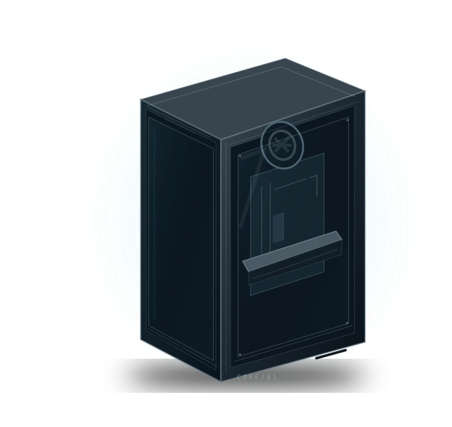
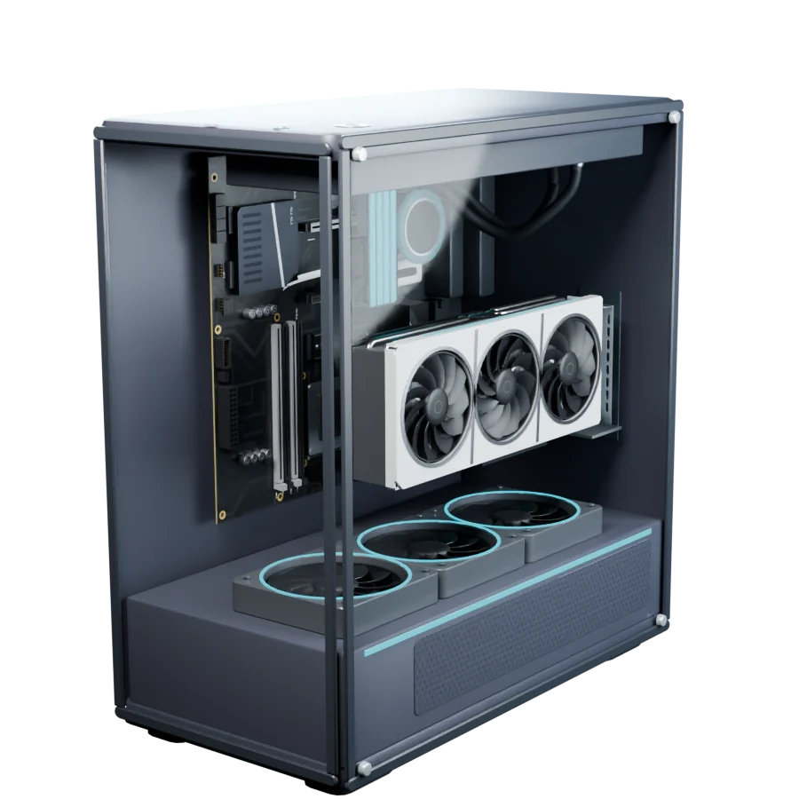
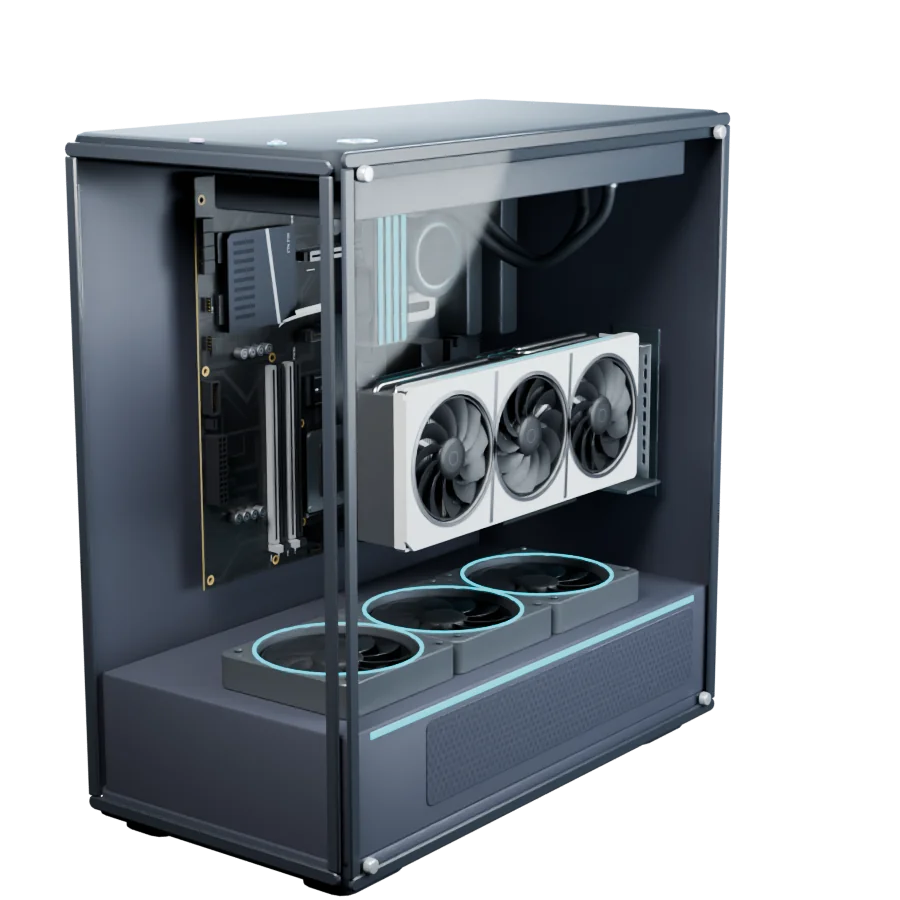

01 / SYSTEM BOOT
La tecnología
se transforma.
Soluciones informáticas reales. Una manera más inteligente de reparar, conectar y crear.
MONTEVIDEO, URUGUAY JG SOLUCIONES INFORMÁTICAS



Recorrido CORE-01 actual en revisión. Nueva prueba de cámara, encendido y continuidad disponible por separado.
REVISAR C6.9-B — PC MÁS CERCA / ANIMATIC CURVO POR SCROLL REVISAR C6.9-A — PC MÁS GRANDE Y CÁMARA CURVA (7 POSES) EXPLORAR C6.7 — MÁS MOVIMIENTO Y SIGUIENTES CAPÍTULOS COMPARAR CON C6.6Entender el sistema.
Resolver el problema.
Diagnóstico y reparación de PC y notebooks, mantenimiento y respaldo de información. Tecnología que funciona sin complicaciones.
Consultar servicio ↗Todo conectado.
Redes WiFi, soluciones en la nube y soporte para mantener la información disponible cuando importa.
Consultar conectividad ↗Ideas que
se hacen sistema.
Exploramos automatización, interfaces y herramientas inteligentes. Los casos reales se incorporarán aquí cuando estén documentados y aprobados para publicar.
PORTFOLIO EN PREPARACIÓN / SIN CASOS INVENTADOS
LA TECNOLOGÍA EVOLUCIONA.
La solución empieza
con una conversación.
¿Tenés una consulta o un proyecto? Elegí cómo comunicarte.